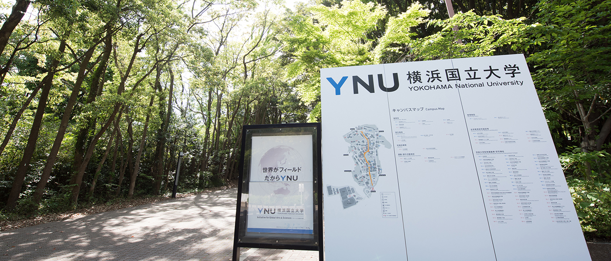
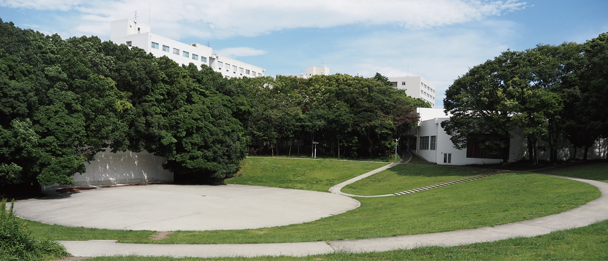
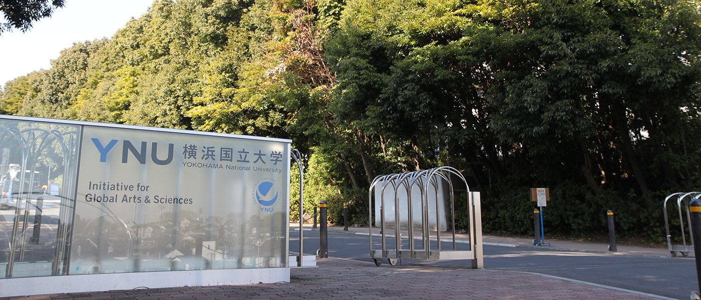

法学・政治学
憲法、民法、会社法、行政法、労働法、政治学など。社会を支えるルールと制度を体系的に学ぶ。
YOKOHAMA NATIONAL UNIVERSITY × LBEEP
法学・政治学を軸に、経済学とリアルな現場を横断する。
横国だからできる、答えのない課題に挑む4年間。
WHAT IS LBEEP?
LBEEP（エルビープ）は、横浜国立大学経済学部の教育プログラム。法学・政治学をベースに経済学も学び、現代社会の課題に対する実践的な対応力を育てます。
Lawcalは「Law（法）」と「Local（地域）」を合わせた言葉。横浜という都市をフィールドに、企業・行政・NPOなどとつながりながら、社会の仕組みをより良くする方法を考えます。
憲法、民法、会社法、行政法、労働法、政治学など。社会を支えるルールと制度を体系的に学ぶ。
ミクロ・マクロ経済学、経済政策、公共経済学など。データと理論で社会を俯瞰する。
企業訪問、実務家との授業、裁判傍聴、コンペなど。学んだ知識を現実の課題に接続する。
LBEEP ORIGINAL
LBEEP独自の「サンドイッチ教育」。まず現場の課題を知り、学問の力を得て、再び現場で解決策を試します。
「導入演習」「課題発見の手法」からスタート。身近な違和感を、考えるべき問いに変える。
法学・政治学・経済学を分野横断で学び、課題を多面的に捉えるための視点を増やす。
「産学官連携演習」などで、企業・行政・地域と協働。提案し、反応を得て、考え直す。

CAMPUSLIFE AT YNU
横浜駅からほど近く、それでいて森のような緑に包まれた常盤台キャンパス。授業の合間に芝生で話したり、図書館でじっくり考えたり。街と自然、どちらも日常になります。
STUDENT VOICE
“先生と学生、学生同士の距離が近い。だからこそ、課題を深く掘り下げて、解決策を考えられました。
LBEEP 1期生インタビューより要約 インタビュー全文を読む ↗
教員から丁寧な助言を受け、仲間と授業外でも議論を重ねる。
書籍だけでなく、課題解決に関わる当事者から直接話を聞く。
法律・政治、経済、経営から、自分の関心に合わせて学びを深める。
FUTURE PATH
制度を読み解く力、データで考える力、異なる立場の人と合意をつくる力。LBEEPで磨く力は、業界や職種を越えて活きます。
国家・地方公務員、公共政策、地域づくり
企画、法務、金融、コンサルティング
法曹、会計士などの資格・専門職
社会課題に挑む事業、さらに深い研究へ
※LBEEP単独の就職先一覧ではなく、プログラムの学びから想定される進路例です。最新の実績は公式情報をご確認ください。

OPEN CAMPUS
模擬講義、学部紹介、キャンパスライフ動画などを公式ページで公開中。来場型イベントの最新日程もこちらから確認できます。
最新情報を公式サイトで確認 ↗
YOUR NEXT STEP
気になった今が、調べ始めるタイミング。次の判定リサーチで「横浜国立大学 経済学部」を登録して、入試科目と日程を確認しよう。